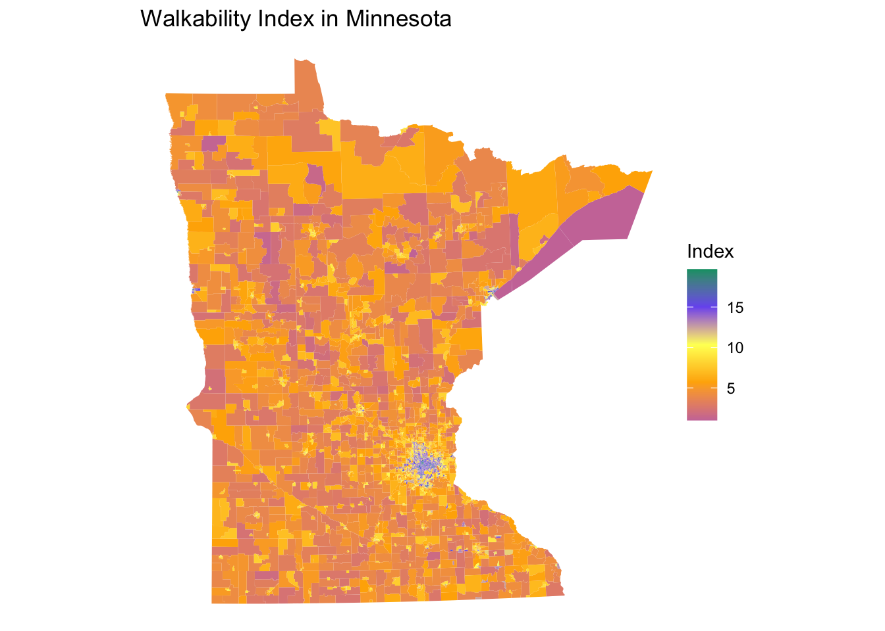
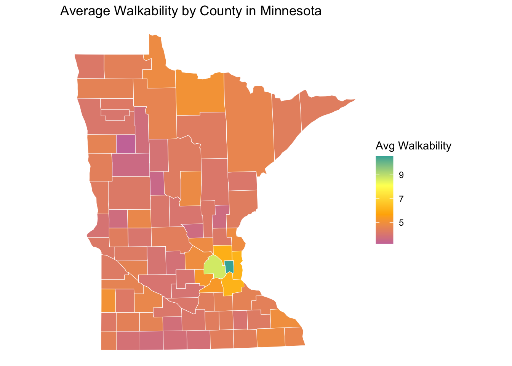
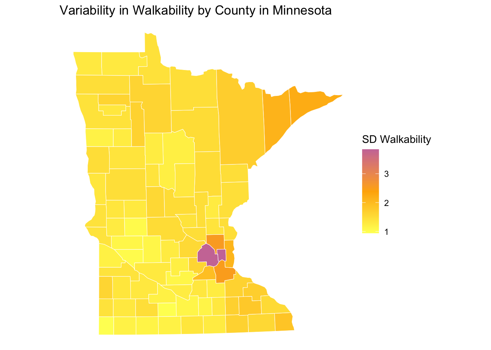
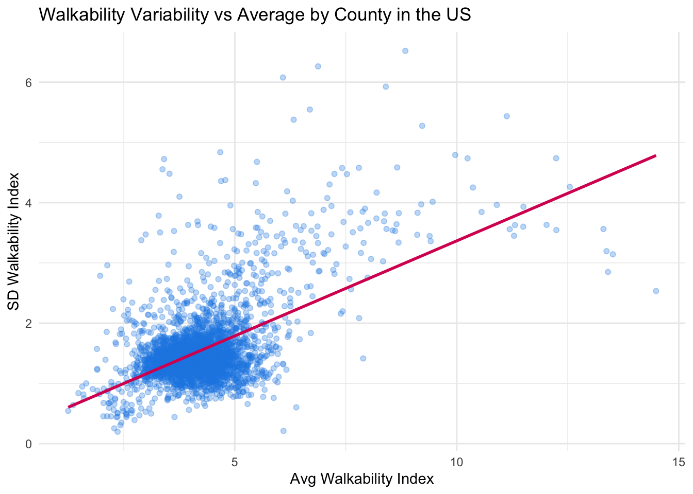
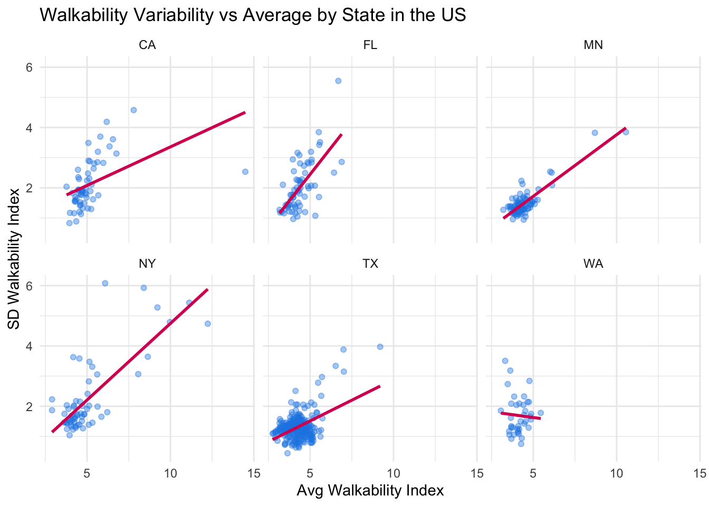

DO NOT add, commit, and push anything in the data/raw folder. The files for this are too big, and you’ll run into file size restrictions. You can ignore them as follows:
Open GitHub Desktop
Right-click any file inside data/raw –> select Ignore folder (add to .gitignore) –> select data/raw
Introduction
The US Walkability Index dataset provides relative walkability information for all 2019 census block groups. Through these exercises, we will explore walkability patterns across the United States.
Requirements:
Downloaded data and read it in
MN plot of walkability (filtering + choropleth)
save filtered dataset as R Data file
Get US county boundaries, transform to have same CRS if necessary
Spatial join (order matters), Weighted mean and SD by county
County-level map of Average Walkability of a state of choice
County-level map of SD in Walkability of a state of choice
Scatterplot of SD and Average Walkability overall
Scatterplot of SD and Average Walkability faceted by state
Insight sentences about graphic
1 Download & Read Data
Go to data.gov, search for “walkability index”, and download the US Walkability Index dataset (the Zip file called WalkabilityIndex.zip). Unzip this file within the data/raw folder of this homework.
Read in the dataset with st_read() by providing a relative path to the WalkabilityIndex/Natl_WI.gdb folder (as opposed to a file within that folder). This will take a few seconds. You should see a message using driver OpenFileGDB during this process.
Reading layer `NationalWalkabilityIndex' from data source
`/Users/yeshejangchup/Documents/CLASSES/ds212/portfolio-yeshedj/homework-yeshedj/hw03/data/raw/WalkabilityIndex/Natl_WI.gdb'
using driver `OpenFileGDB'
Simple feature collection with 220739 features and 29 fields
Geometry type: MULTIPOLYGON
Dimension: XY
Bounding box: xmin: -10434580 ymin: -83867.97 xmax: 3407868 ymax: 6755033
Projected CRS: USA_Contiguous_Albers_Equal_Area_Conic_USGS_version
2 MN Walkability
Let’s first get a sense for the data by making a map of walkability indices for Minnesota. You will first need to filter the walk_index dataset by using the STATEFP variable. STATEFP contains the state’s FIPS code which is "27" for Minnesota. The NatWalkInd variable contains the walkability indices. Save this smaller dataset in a data/processed folder as walk_index_mn.RData, which is an R Data file.
Code
walk_index_mn <- walk_index |>filter(STATEFP =="27") # Code for filtering to MNdir.create("data/processed", recursive =TRUE, showWarnings =FALSE)save(walk_index_mn, file ='data/processed/walk_index_mn.RData')
Code
load('data/processed/walk_index_mn.RData')# Plot walkability data for MNggplot(walk_index_mn) +geom_sf(aes(fill = NatWalkInd), color =NA) +scale_fill_gradientn(colors =c("#CC79A7", "#FFB000", "#FEFE62", "#785EF0", "#009E73"),name ="Index" ) +labs(title ="Walkability Index in Minnesota") +theme_void()

3 US County Boundaries
We will start setting up to do a nationwide exploration of walkability. Use the us_counties() function within the USAboundaries package to obtain the most current low resolution county boundaries for all US counties. (Look up the documentation for this function to see how to structure the arguments.)
If needed, transform all_us_counties to have the same CRS as the Walkability Index dataset.
Code
all_us_counties <-us_counties(resolution ="low", states =NULL)st_crs(all_us_counties) ==st_crs(walk_index)
Use st_join() within the sf package to insert walkability information into the all_us_counties dataset. Because the walkability information is available over regions that are smaller than counties, this join will merge in multiple regions of walkability information for each county.
After the join, summarize the walkability index within each county with the weighted mean and weighted standard deviation, where the weights are given by the Shape_Area variable.
Background information about weighted summary measures: In an ordinary (unweighted) mean and standard deviation, each observation gets a weight of 1–that is, every observation contributes equally to the calculation. We want to compute a weighted measure because the regions within a county have different areas.
Techinical implementation: You can install the Hmisc package and use the following:
Hmisc::wtd.mean(x, weights)
Hmisc::wtd.var(x, weights)
This computes a weighted variance–you’ll need to take the square root after this.
Note: DON’T add library(Hmisc) to your package loading code chunk. Hmisc contains a function called summarize() that will conflict with dplyr::summarize().
In both functions, x represents the vector of numerical entries you want to summarize, and weights is a vector of the same length as x that gives the weight for each entry of x.
Code
# Use st_join to merge county boundaries and regions where we have walkability index dataall_us_counties_walk_index <-st_join(all_us_counties, walk_index)# Use Hmisc::wtd.mean() and Hmisc::wtd.var() to compute the weighted mean and SD of the walkability index (weighted by Shape_Area)all_us_counties_walk_index_summ <- all_us_counties_walk_index |>st_drop_geometry() |>group_by(geoid, name, state_abbr) |> dplyr::summarize(mean_walk = Hmisc::wtd.mean(NatWalkInd, weights = Shape_Area, na.rm =TRUE),sd_walk =sqrt(Hmisc::wtd.var(NatWalkInd, weights = Shape_Area, na.rm =TRUE)),.groups ="drop" ) |>left_join(all_us_counties |>select(geoid, geometry), by ="geoid") |>st_as_sf()
5 County Average Walkability
Pick one state. For this state, make a map that allows you to see average walkability within a county and a map that allows you to see the variability in walkability across a county. (The goal of this part is to get a sense of the county-level walkability data before zooming out to do a nationwide exploration.)
Code
# Filter down to one state and make mapsmn_counties <- all_us_counties_walk_index_summ |>filter(state_abbr =="MN")# Map of avg walkabilityggplot(mn_counties) +geom_sf(aes(fill = mean_walk), color ="white") +scale_fill_gradientn(colors =c("#CC79A7", "#FFB000", "#FEFE62", "#40B0A6"),name ="Avg Walkability" ) +labs(title ="Average Walkability by County in Minnesota") +theme_void()

Code
# Map of variability(SD) in walkabilityggplot(mn_counties) +geom_sf(aes(fill = sd_walk), color ="white") +scale_fill_gradientn(colors =c("#FEFE62", "#FFB000", "#CC79A7"),name ="SD Walkability" ) +labs(title ="Variability in Walkability by County in Minnesota") +theme_void()

6 Walkability Variability vs Average
Make plots (not maps) that allow you to explore if there is a relationship between the variability in walkability in a county and the average level of walkability in a county. One plot should depict the United States as a whole, and a second plot should break down this relationship across states. Summarize your findings and what you would be curious to explore next based on your explorations.
Code
# Plots for the US and by states# US as a whole scatterplotggplot(all_us_counties_walk_index_summ, aes(x = mean_walk, y = sd_walk)) +geom_point(alpha =0.3, color ="#1E88E5") +geom_smooth(method ="lm", se =FALSE, color ="#D81B60") +labs(title ="Walkability Variability vs Average by County in the US",x ="Avg Walkability Index",y ="SD Walkability Index" ) +theme_minimal()

Code
# by Stateall_us_counties_walk_index_summ |>filter(state_abbr %in%c("MN", "CA", "TX", "NY", "FL", "WA")) |>ggplot(aes(x = mean_walk, y = sd_walk)) +geom_point(alpha =0.4, color ="#1E88E5") +geom_smooth(method ="lm", se =FALSE, color ="#D81B60") +facet_wrap(~state_abbr) +labs(title ="Walkability Variability vs Average by State in the US",x ="Avg Walkability Index",y ="SD Walkability Index" ) +theme_minimal()

The counties with a higher average walkability show a greater variability in the walkability, which suggests that more walkable areas will have a mix of very walkable and less walkable groups, likely due to the dense urban parts that are surrounded by less walkable neighborhoods.
I would be curious to explore whether this pattern would be similar for counties that have larger and more populated cities but are low in its walkability.
Resources Reflection (required)
List the resources you used to help with this assignment then write 3-5 sentence reflection on which resources were most helpful in finishing this task.
Resources:
R documentation
Textbook
In class activities
Reflection: Similar to HW3 part 1, the most helpful resource was again the R documentation due to its very useful explanations of how functions work, how it can be used, and the example codes. The in-class activities were also useful to reference like the Spatial Viz activity. I also referred back to the textbook as well to review and remind myself of some concepts.
Source Code
---title: "HW03-P2 Adv Map Viz"format: html: {}---::: {.callout-important title="Important GitHub Note"}DO NOT add, commit, and push anything in the `data/raw` folder.The files for this are too big, and you'll run into file size restrictions.You can ignore them as follows:- Open GitHub Desktop- Right-click any file inside `data/raw` --\> select `Ignore folder (add to .gitignore)` --\> select `data/raw`:::## IntroductionThe US Walkability Index dataset provides relative walkability information for all 2019 census block groups.Through these exercises, we will explore walkability patterns across the United States.**Requirements:**- Downloaded data and read it in- MN plot of walkability (filtering + choropleth)- save filtered dataset as R Data file- Get US county boundaries, transform to have same CRS if necessary- Spatial join (order matters), Weighted mean and SD by county- County-level map of Average Walkability of a state of choice- County-level map of SD in Walkability of a state of choice- Scatterplot of SD and Average Walkability overall- Scatterplot of SD and Average Walkability faceted by state- Insight sentences about graphic## 1 Download & Read DataGo to [data.gov](https://catalog.data.gov/dataset/), search for "walkability index", and download the US Walkability Index dataset (the Zip file called `WalkabilityIndex.zip`).Unzip this file within the `data/raw` folder of this homework.Read in the dataset with `st_read()` by providing a relative path to the `WalkabilityIndex/Natl_WI.gdb` folder (as opposed to a file within that folder).This will take a few seconds.You should see a message `using driver OpenFileGDB` during this process.```{r reading}library(sf)library(tidyverse)library(USAboundaries)walk_index <-st_read("../data/raw/WalkabilityIndex/Natl_WI.gdb")```## 2 MN WalkabilityLet's first get a sense for the data by making a map of walkability indices for Minnesota.You will first need to filter the `walk_index` dataset by using the `STATEFP` variable.`STATEFP` contains the state's [FIPS code](https://transition.fcc.gov/oet/info/maps/census/fips/fips.txt) which is `"27"` for Minnesota.The `NatWalkInd` variable contains the walkability indices.Save this smaller dataset in a `data/processed` folder as `walk_index_mn.RData`, which is an R Data file.```{r mn_wi_filter}walk_index_mn <- walk_index |>filter(STATEFP =="27") # Code for filtering to MNdir.create("data/processed", recursive =TRUE, showWarnings =FALSE)save(walk_index_mn, file ='data/processed/walk_index_mn.RData')``````{r mn_wi_map}load('data/processed/walk_index_mn.RData')# Plot walkability data for MNggplot(walk_index_mn) +geom_sf(aes(fill = NatWalkInd), color =NA) +scale_fill_gradientn(colors =c("#CC79A7", "#FFB000", "#FEFE62", "#785EF0", "#009E73"),name ="Index" ) +labs(title ="Walkability Index in Minnesota") +theme_void()```## 3 US County BoundariesWe will start setting up to do a nationwide exploration of walkability.Use the `us_counties()` function within the `USAboundaries` package to obtain the most current low resolution county boundaries for all US counties.(Look up the documentation for this function to see how to structure the arguments.)If needed, transform `all_us_counties` to have the same CRS as the Walkability Index dataset.```{r get_us_counties}all_us_counties <-us_counties(resolution ="low", states =NULL)st_crs(all_us_counties) ==st_crs(walk_index)all_us_counties <-st_transform(all_us_counties, st_crs(walk_index))```## 4 Join Walkability & BoundariesUse `st_join()` within the `sf` package to insert walkability information into the `all_us_counties` dataset.Because the walkability information is available over regions that are smaller than counties, this join will merge in multiple regions of walkability information for each county.After the join, summarize the walkability index within each county with the weighted mean and weighted standard deviation, where the weights are given by the `Shape_Area` variable.*Background information about weighted summary measures:* In an ordinary (unweighted) mean and standard deviation, each observation gets a weight of 1--that is, every observation contributes equally to the calculation.We want to compute a weighted measure because the regions within a county have different areas.*Techinical implementation:* You can install the `Hmisc` package and use the following:- `Hmisc::wtd.mean(x, weights)`- `Hmisc::wtd.var(x, weights)` - This computes a weighted variance--you'll need to take the square root after this.Note: DON'T add `library(Hmisc)` to your package loading code chunk.`Hmisc` contains a function called `summarize()` that will conflict with `dplyr::summarize()`.In both functions, `x` represents the vector of numerical entries you want to summarize, and `weights` is a vector of the same length as `x` that gives the weight for each entry of `x`.```{r summary_over_counties}# Use st_join to merge county boundaries and regions where we have walkability index dataall_us_counties_walk_index <-st_join(all_us_counties, walk_index)# Use Hmisc::wtd.mean() and Hmisc::wtd.var() to compute the weighted mean and SD of the walkability index (weighted by Shape_Area)all_us_counties_walk_index_summ <- all_us_counties_walk_index |>st_drop_geometry() |>group_by(geoid, name, state_abbr) |> dplyr::summarize(mean_walk = Hmisc::wtd.mean(NatWalkInd, weights = Shape_Area, na.rm =TRUE),sd_walk =sqrt(Hmisc::wtd.var(NatWalkInd, weights = Shape_Area, na.rm =TRUE)),.groups ="drop" ) |>left_join(all_us_counties |>select(geoid, geometry), by ="geoid") |>st_as_sf()```## 5 County Average WalkabilityPick one state.For this state, make a map that allows you to see average walkability within a county and a map that allows you to see the variability in walkability across a county.(The goal of this part is to get a sense of the county-level walkability data before zooming out to do a nationwide exploration.)```{r one_state_county_summary}# Filter down to one state and make mapsmn_counties <- all_us_counties_walk_index_summ |>filter(state_abbr =="MN")# Map of avg walkabilityggplot(mn_counties) +geom_sf(aes(fill = mean_walk), color ="white") +scale_fill_gradientn(colors =c("#CC79A7", "#FFB000", "#FEFE62", "#40B0A6"),name ="Avg Walkability" ) +labs(title ="Average Walkability by County in Minnesota") +theme_void()# Map of variability(SD) in walkabilityggplot(mn_counties) +geom_sf(aes(fill = sd_walk), color ="white") +scale_fill_gradientn(colors =c("#FEFE62", "#FFB000", "#CC79A7"),name ="SD Walkability" ) +labs(title ="Variability in Walkability by County in Minnesota") +theme_void()```## 6 Walkability Variability vs AverageMake plots (not maps) that allow you to explore if there is a relationship between the variability in walkability in a county and the average level of walkability in a county.One plot should depict the United States as a whole, and a second plot should break down this relationship across states.Summarize your findings and what you would be curious to explore next based on your explorations.```{r sd_vs_mean_us}# Plots for the US and by states# US as a whole scatterplotggplot(all_us_counties_walk_index_summ, aes(x = mean_walk, y = sd_walk)) +geom_point(alpha =0.3, color ="#1E88E5") +geom_smooth(method ="lm", se =FALSE, color ="#D81B60") +labs(title ="Walkability Variability vs Average by County in the US",x ="Avg Walkability Index",y ="SD Walkability Index" ) +theme_minimal()# by Stateall_us_counties_walk_index_summ |>filter(state_abbr %in%c("MN", "CA", "TX", "NY", "FL", "WA")) |>ggplot(aes(x = mean_walk, y = sd_walk)) +geom_point(alpha =0.4, color ="#1E88E5") +geom_smooth(method ="lm", se =FALSE, color ="#D81B60") +facet_wrap(~state_abbr) +labs(title ="Walkability Variability vs Average by State in the US",x ="Avg Walkability Index",y ="SD Walkability Index" ) +theme_minimal()```> The counties with a higher average walkability show a greater variability in the walkability, which suggests that more walkable areas will have a mix of very walkable and less walkable groups, likely due to the dense urban parts that are surrounded by less walkable neighborhoods.>> I would be curious to explore whether this pattern would be similar for counties that have larger and more populated cities but are low in its walkability.## Resources Reflection (required)List the resources you used to help with this assignment then write 3-5 sentence reflection on which resources were most helpful in finishing this task.**Resources:**- R documentation- Textbook- In class activities**Reflection:** Similar to HW3 part 1, the most helpful resource was again the R documentation due to its very useful explanations of how functions work, how it can be used, and the example codes.The in-class activities were also useful to reference like the Spatial Viz activity.I also referred back to the textbook as well to review and remind myself of some concepts.